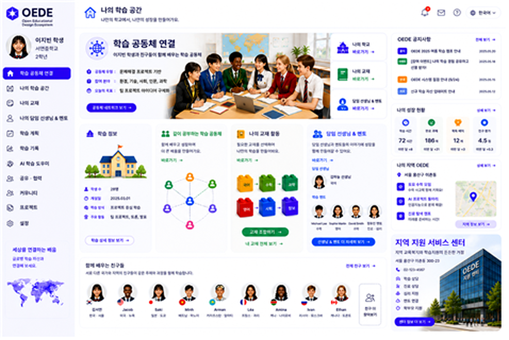
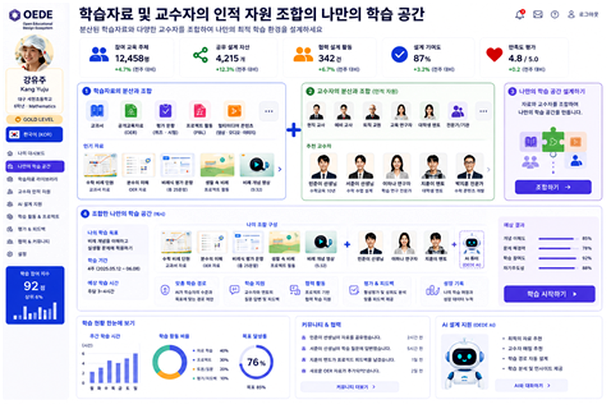
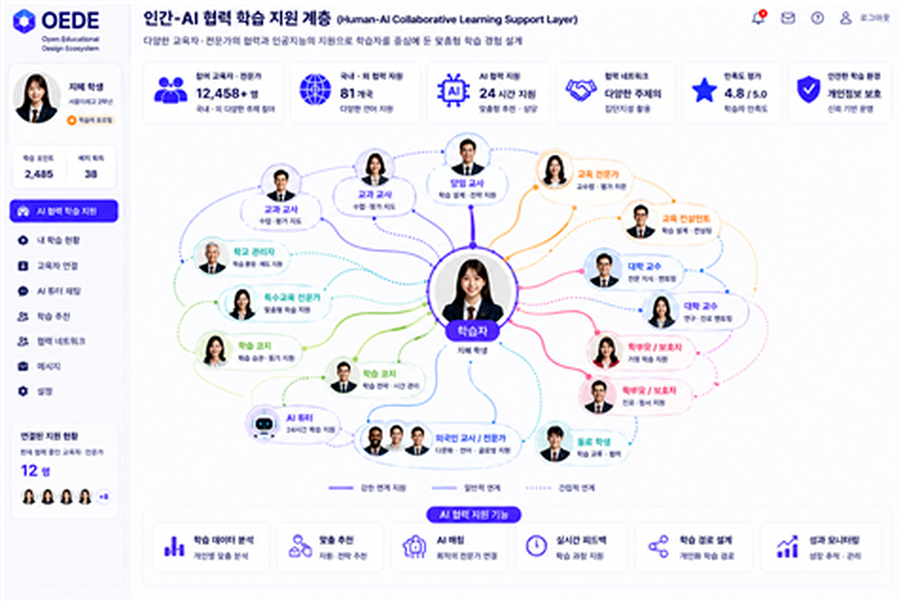
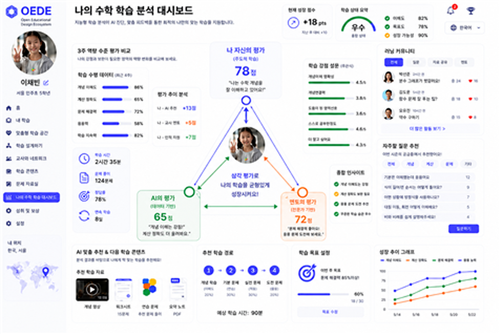
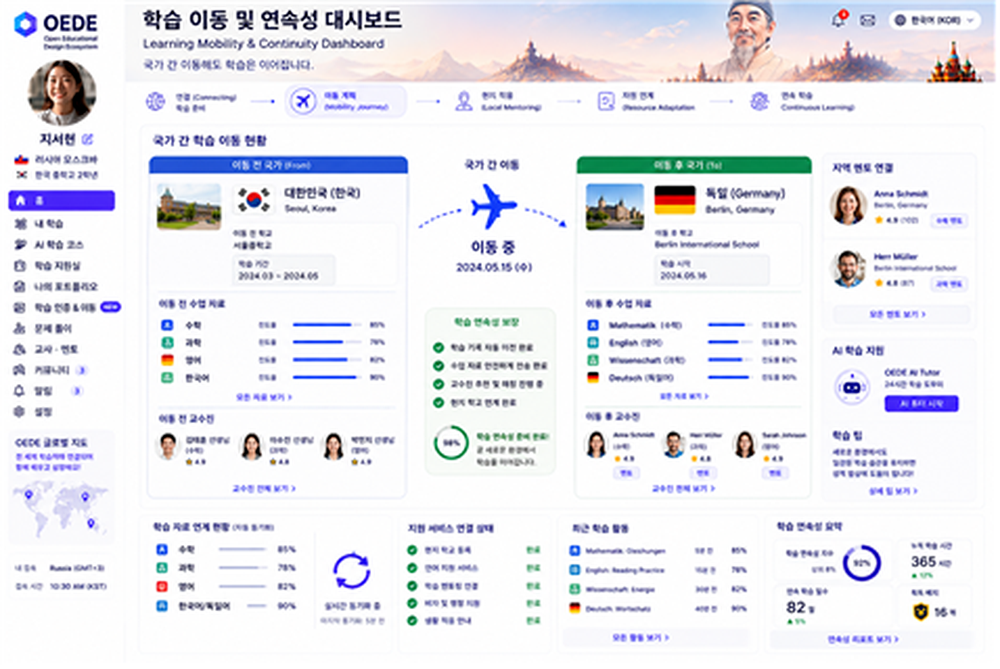
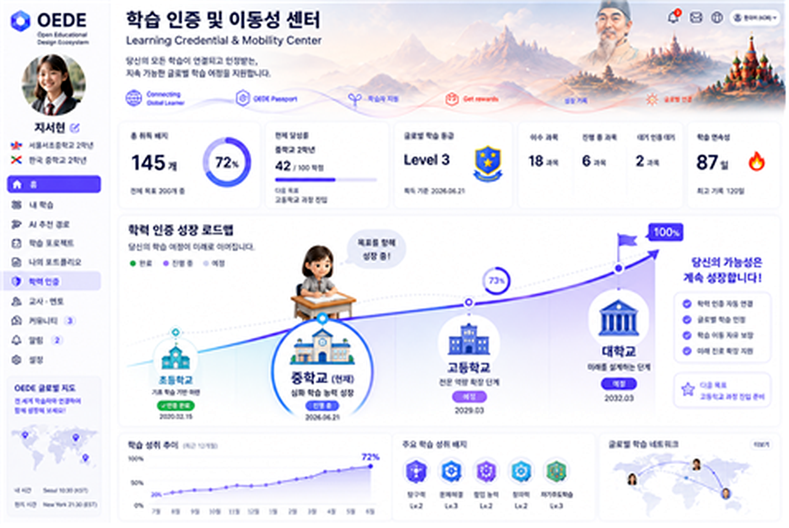
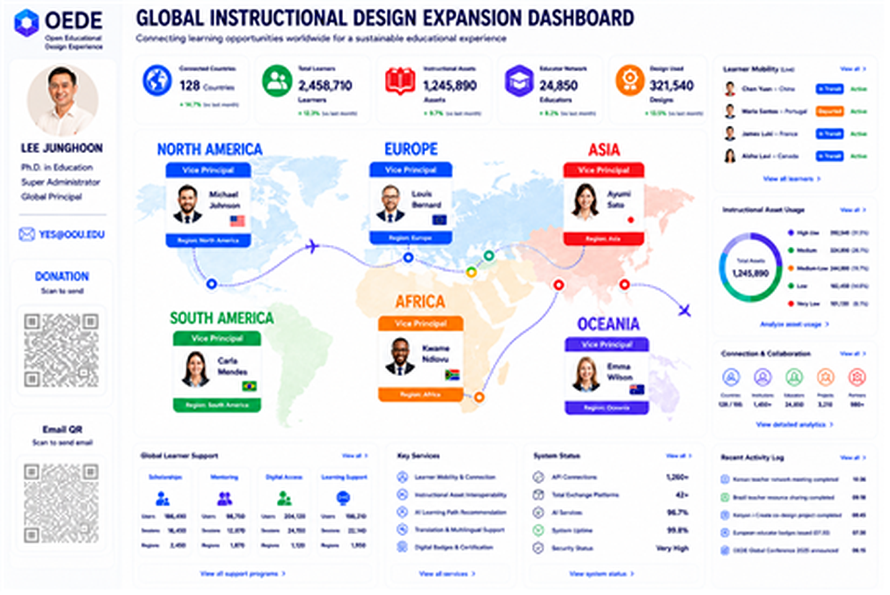
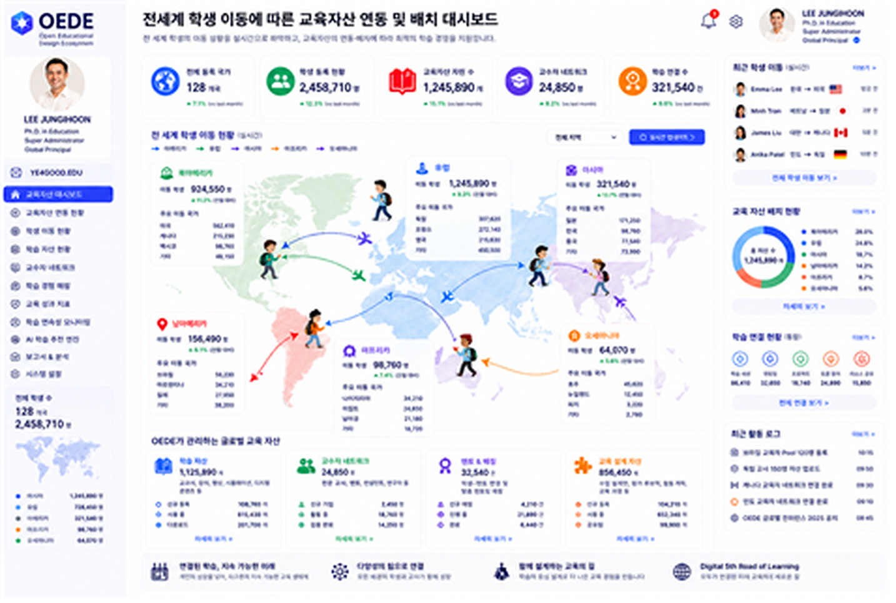

Personal Learning Hub
학습자는 자신의 학교, 교재, 교사, 멘토, 학습자료를 한 화면에서 확인하며 개인 학습 공간을 구성한다.

각 이미지는 논문에서 제안한 OEDE 계층과 기능을 시각화한 화면 예시입니다. 이미지 아래 설명은 방문자가 주요 기능을 즉시 이해할 수 있도록 논문 내용을 요약한 것입니다.

학습자는 자신의 학교, 교재, 교사, 멘토, 학습자료를 한 화면에서 확인하며 개인 학습 공간을 구성한다.
학생 화면과 관리자 화면을 병렬로 보여 주어 학습 지원과 관리가 동시에 연결되는 구조를 제시한다.

다중 교재, 교사 자료, 멘토 자원, AI 추천 자료를 블록처럼 조합하여 개인화된 학습 경로를 만든다.
여러 국가와 교사 자원을 비교하고 선택하며 분산된 교육설계 경험을 학습 자산으로 전환한다.

학생을 중심으로 교사, 대학생 멘토, AI, 또래, 가족, 지역 전문가가 협력하는 인간-AI 지원망을 보여준다.
동일한 개념을 여러 설명 방식과 문화적 맥락으로 제시하여 학습자가 개념을 다각도로 이해하도록 돕는다.

학생의 자기평가와 AI 분석 결과를 비교하여 학습 인식 격차를 확인하고 다음 학습 방향을 협의한다.

전학, 이주, 해외 체류 상황에서도 학습 이력과 자료가 단절되지 않도록 이동성을 지원한다.

학습 성취, 인증, 이동 기록을 통합하여 학교·지역·국가를 넘어 학습의 연속성을 보장한다.
다문화·이주배경 학습자를 위해 언어, 상담, 복지, 지역 지원 서비스를 학습 과정과 연결한다.

학생 이동과 학습 자산 이동을 전 세계 지도 위에서 관리하여 교육 자산의 연계를 시각화한다.

대륙별 교육설계 책임자와 지역별 자원 연결을 통해 OEDE의 글로벌 확장 구조를 표현한다.

위치 기반 학습 연계와 학교 간 학습자료 이동을 통해 학습자의 이동 상황을 지원한다.

학습자료, 교사 자원, 인증, 지역 자원을 하나의 교육 자산 이동 체계로 관리한다.

글로벌 학습 현황과 교육 자산 흐름을 관리자 관점에서 모니터링하는 종합 대시보드이다.